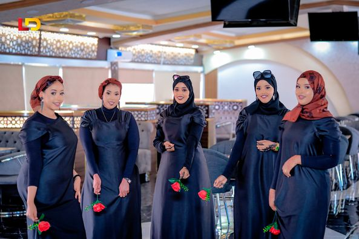
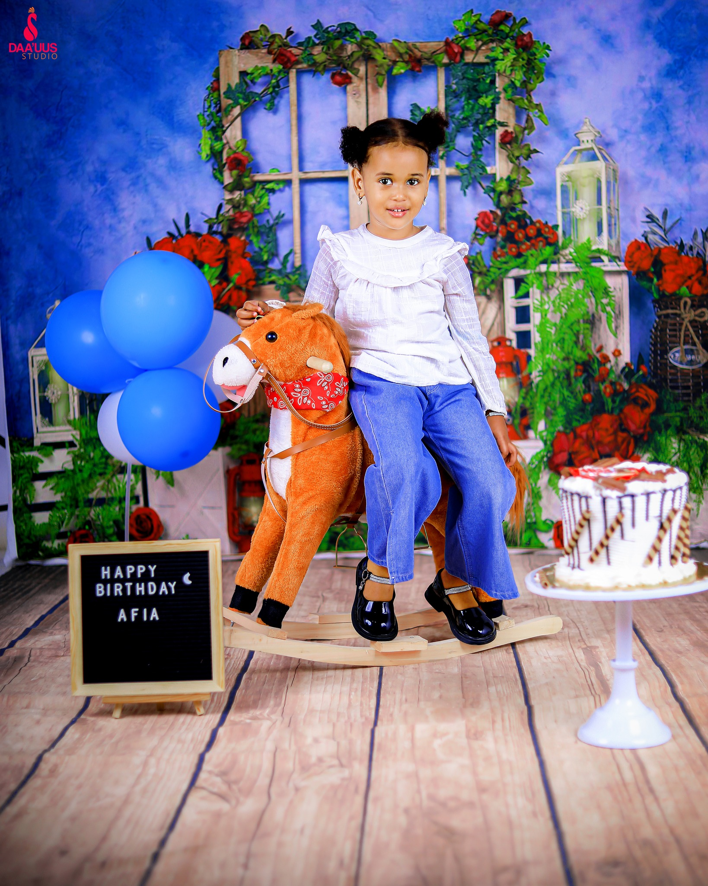
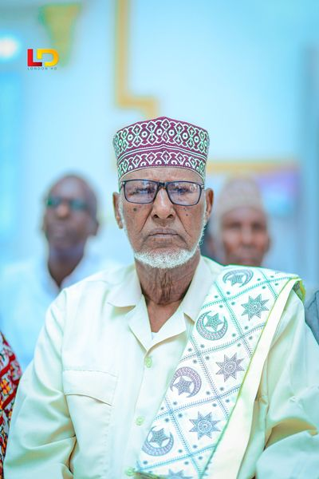
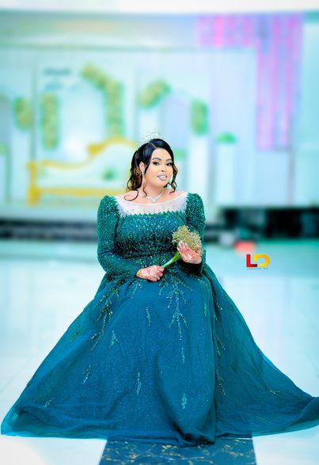
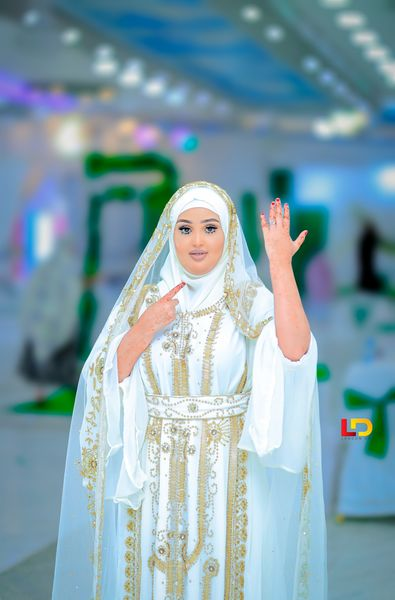
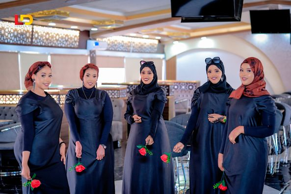
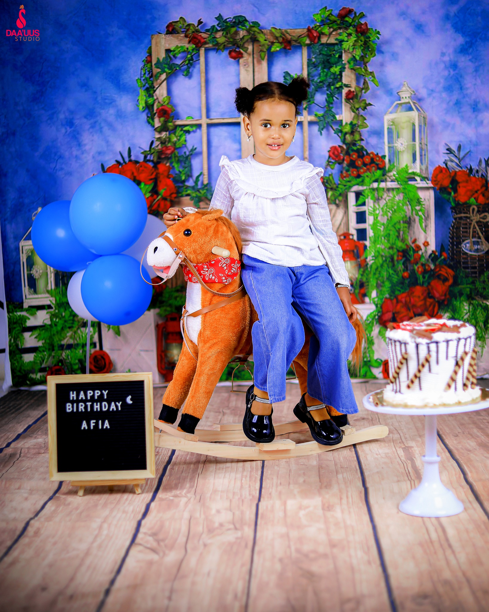
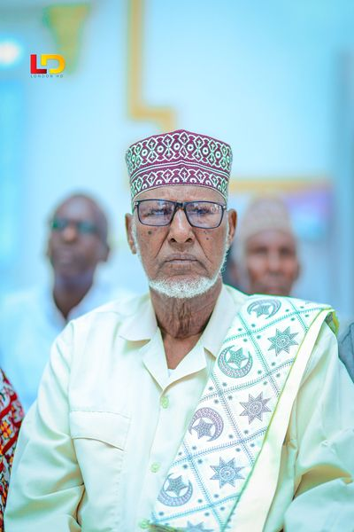
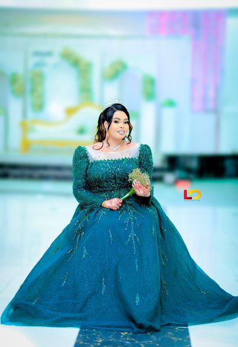
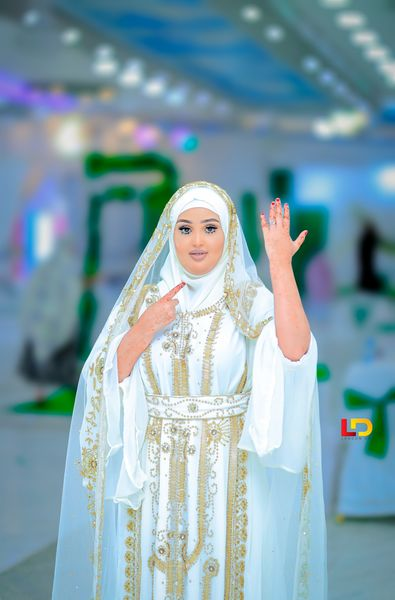

~ PORTFOLIO ~


ADEEGYADA
Capturer, waxaan ku bixinaa adeegyo sawir qaadis oo kala duwan loogu talagalay in lagu daboolo baahiyahaaga gaarka ah. Iyada oo ay ka go'an tahay heer sare iyo hal-abuurka, waxaan ku dadaaleynaa in aan dhaafno filashadaada, bixinta muuqaallo soo jiidasho leh oo sheekadaada uga sheekeynaya si dhab ah iyo xamaasad.
Kulamada Sawirka
Kulamadayada sawirka waxa loo qorsheeyay in lagu muujiyo shakhsiyaddaada iyo qaab sawiro yaab leh.
Kulamada Hooyada
Ku soo dhawoow quruxda iyo mucjisada nolosha cusub ee hooyanimadayada iyo fadhiyada sawir qaade ee ilmaha dhashay.
Kulamada Qoyska
Ku ixtiraam xidhiidhka qoyska adiga oo nashqadeeyay nashqadeynta ciyaarta ee caadadu tahay daqiiqado iyo fadhiyo sawir.
~ TESTIMONIALS ~

Waanu ku faraxsanaan kari waynay fadhiga sawirka qoyskayaga Qabtaha Waxay naga dhigeen nasasho iyo raaxo inta lagu jiro oo dhan toogashada oo dhan, taasoo keentay in sawiro dabiici ah oo hufan in si fiican uga tarjumaysa firfircoonida qoyskeena. Sawirradani waxay noqon doonaan la jecel yahay sanadaha soo socda!
Samatar Family

The birth and baby sessions are the most popular precious moments in our lives with kindness and care. From the anticipation of pregnancy to the joy of our welcome small, each picture tells a story that we will cherish forever. Thank you for creating such a beautiful memory for us family!
Emily and David
~ GALLERY ~
 









~ LATEST BLOG ~
Qabashada Dareenka Qaab Kasta
Boostada balooggani waxa ay si qoto dheer uga hadlaysaa muhiimadda ay leedahay sheeko-sheekaynta sawir qaadis iyo sida uu u wajaho Qabad qaabaynta dareenka iyo sheeko ku saabsan shaqadooda. Akhristayaashu waxay ogaan doonaan farsamooyinka iyo xeeladaha ay isticmaalaan sawir-qaadayaasha xirfadlayaasha ah si ay u kiciyaan dareenka, gudbin macne, oo samee sheekooyin muuqaal ah oo soo jiidasho leh ula falgala daawadayaasha heer qoto dheer.
~ INSTAGRAM ~